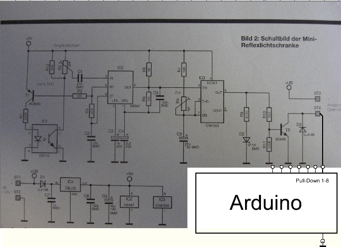
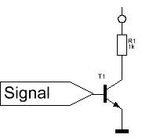
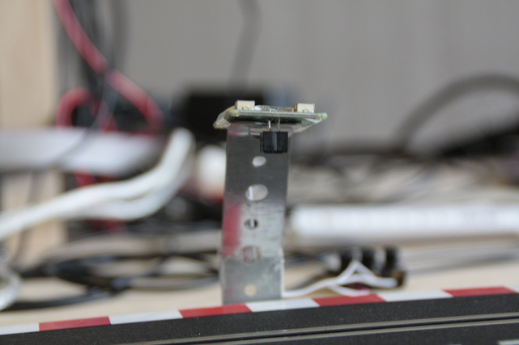
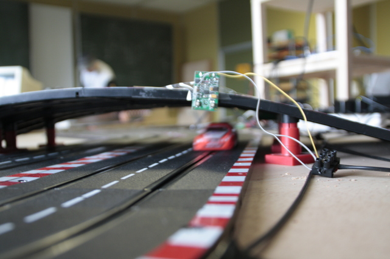

Die Lichtschranken verwendeten wir zunächst nur für die Zeitmessung der einzelnen Runden bzw. Rennen, später kamen sie auch für das selbstständige Fahren zum Einsatz.
Für die Lichtschranken der Zeitmessung nutzten wir ein Gestell, an dem für jede der vier Bahnen eine Lichtschranke befestigt war. Um die Daten der Lichtschranken an den Computer übermitteln zu können, benutzten wir ein UE9 als Schnittstelle.
Die im Laufe der Zeit acht weiteren Lichtschranken verbanden wir direkt mit unserem Arduino, welcher mit Hilfe der von den Schranken gelieferten Daten auf die Position des zu steuernden Autos schließen kann. Die Lichtschranken sind hierbei vor den Kurven platziert, sodass vor diesen rechtzeitig abgebremst werden kann.
Die Lichtschranken bestehen aus einer Platine und einem Reflexsensor; fährt ein Auto unter diesem Sensor hindurch, sorgt die Schaltung dafür, dass mittels eines Pull-Down Widerstandes der High-Pin des Arduinos auf Masse gezogen wird. Diesen Widerstand bauten wir zunächst in unsere Schaltung ein, später fiel er weg, da wir entdeckten, dass der Arduino Uno über eingebaute Pull-Down Widerstände verfügt (Port 13 ausgenommen) und diese lediglich softwareseitig aktiviert werden mussten
Als Hilfe diente uns ein Tutorial von arduino.cc, in welchem am Beispiel eines einfachen Buttons die Schaltung und dazu nötige Software erläutert wurde.
Gegen Ende des Projekts, nachdem wir uns lange mit dem selbständigen Fahren beschäftigt haben, schlossen wir die Zeitmessung, die bereits lange abgeschlossen war. und mussten uns einem neuem Problem stellen ein reproduzierbarer Fehler welcher dafür sorgte, dass einige Lichtschranken bei Aktivierung andere beeinflusst. Dieser Fehler kam Zustande, weil wir ein Verlängerungskabel verwendeten, welches den Ansprüchen nicht genügte, sodass wir es noch austauschen mussten. Das Kabel welches durch Quetschverbindugen an den Streckern befestigt war muss an diesen Quetschverbindungen nicht perfekt isoliert haben, sodass es ständig zu Fehlsignalen kam.
